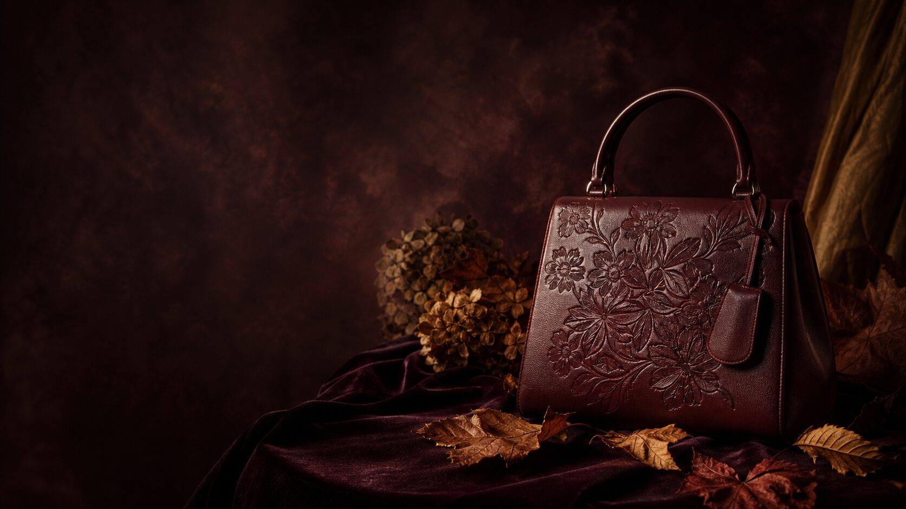
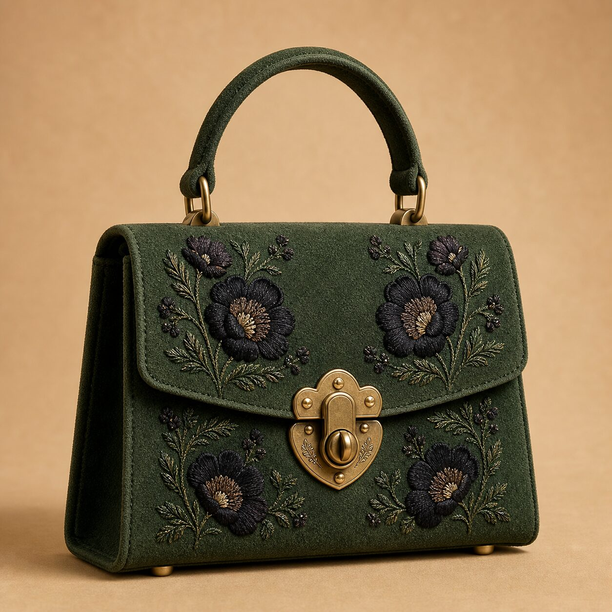
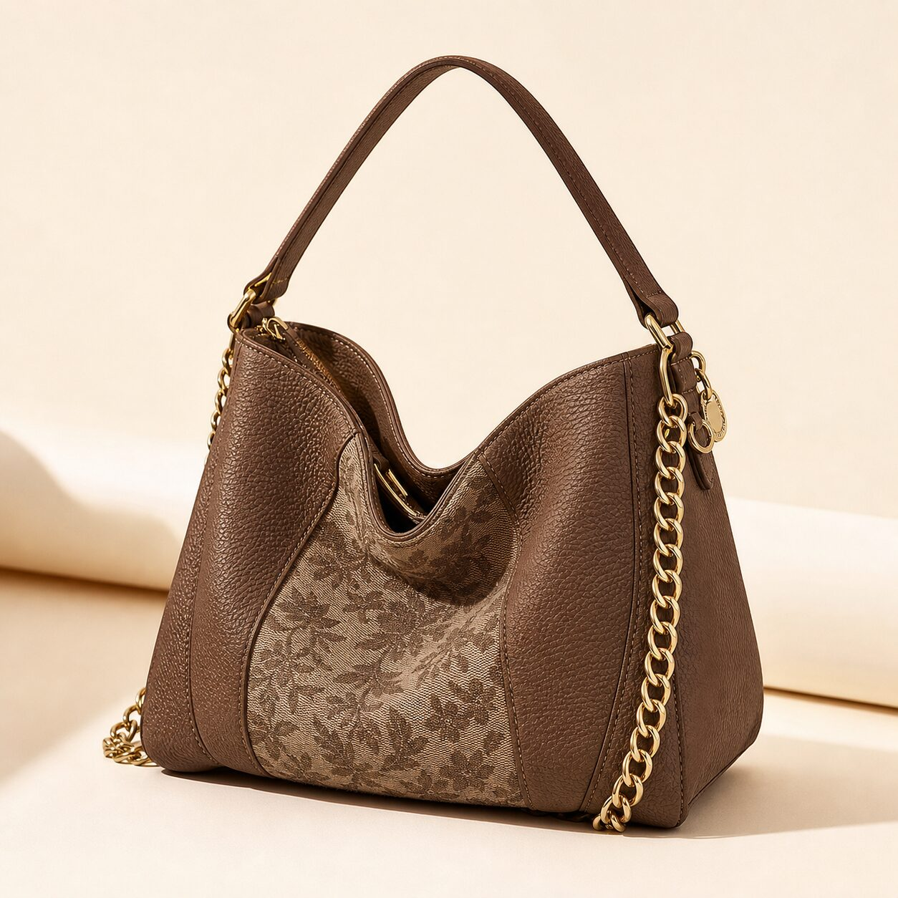
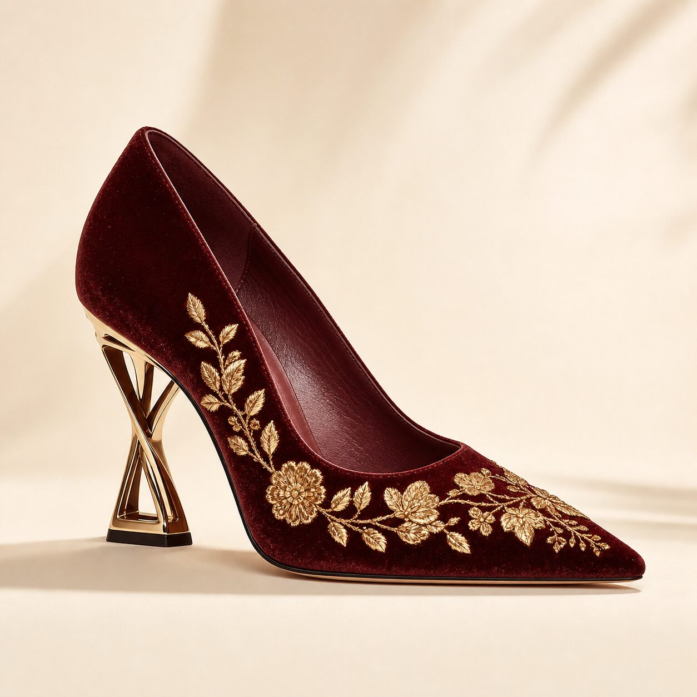
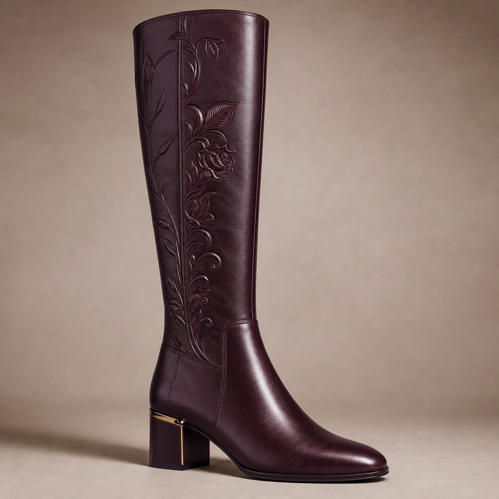
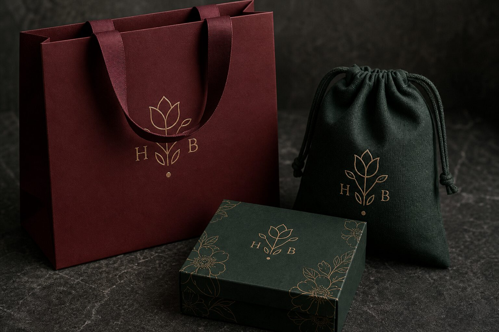
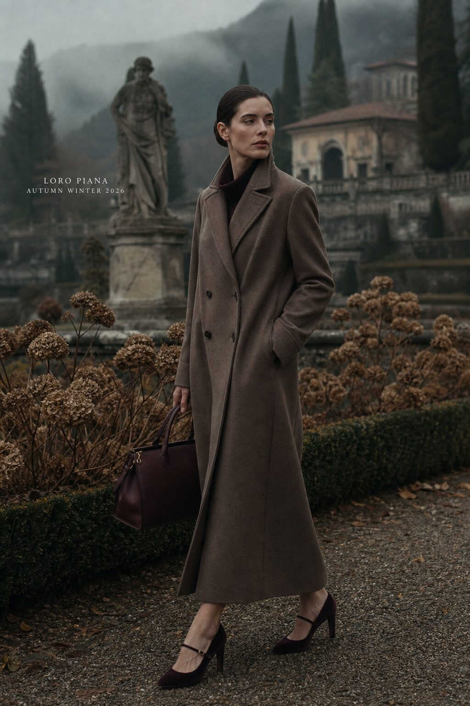
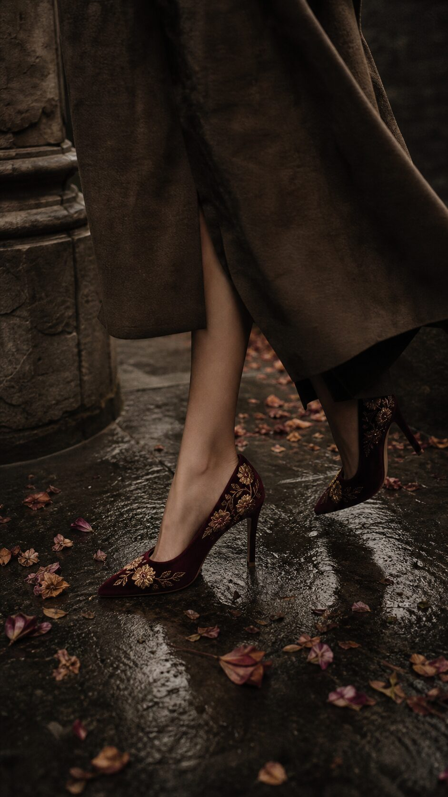

Oxblood Bloom
#4E1B23Colore firma. Pelle di vitello, velluto di seta.

Maison italiana · Fondata a Reggio Emilia
Borse e calzature con motivi floreali scolpiti nella pelle.
Collezione Autunno / Inverno 2026 — 2027.
Mirafiore nasce dall'idea che un fiore non muoia in autunno: cambi soltanto materia. Diventa pelle, velluto, ottone brunito. Ogni borsa è un giardino d'inverno, ogni scarpa un passo dentro la stagione fredda. Eleganza lenta, fatta a mano, destinata a durare.
Pellami conciati al vegetale in Toscana, ricami eseguiti a telaio manuale. 42 ore per una borsa.
Un erbario proprietario di 36 motivi floreali: rosa canina, felce, cardo, ortensia secca.
Garanzia a vita sulla struttura, servizio di restauro e ri-ricamo su ogni pezzo firmato.
La stagione abbandona i neutri freddi: dominano i rossi organici, i verdi profondi di sottobosco e i bruni golosi, illuminati da un solo metallo caldo.
Colore firma. Pelle di vitello, velluto di seta.
Camoscio strutturato, fodere in twill.
Il neutro caldo della stagione.
Contrasto luce, packaging interno.
Hardware brunito, foil, ricami.
Base tipografica e serale.




Sei motivi disegnati a mano e digitalizzati per ricamo, sbalzo e jacquard. Ogni pezzo porta un fiore diverso: è la sua firma, non un decoro.
Il monogramma M nasce da due steli che si incontrano: le aste terminano in petali, il punto centrale è il seme. Funziona inciso, ricamato, in foil e a 12 px.
Cormorant Garamond — display
Jost — testi, 300 / 400
A a G g 26 / 27 ✿
Sistema tipografico
Packaging · shopper, dust bag, box
«Quando il giardino si spegne, noi fioriamo.
Pelle scolpita a mano. Petali ricamati nell'ombra.
Velluto che trattiene la luce di novembre.
Mirafiore, Autunno Inverno 2026/27.
Perché l'eleganza non aspetta la primavera.»


Il lusso silenzioso si riscalda: nessun logo, ma materia riconoscibile a un metro di distanza.
Il floreale abbandona il pastello primaverile e diventa notturno, tono su tono, quasi invisibile.
Tacchi e fibbie come piccole architetture in ottone brunito, mai lucido.
Velluto di seta e camoscio strutturato: la stagione si giudica con le dita.
Restauro, ri-ricamo e passaporto digitale del prodotto come parte dell'offerta.
Piano social
lancio · 6 settimane
Tre format ricorrenti: Teaser botanico (reel 9:16), Prodotto in still life (feed 4:5), Rito d'atelier (storie). Tono: intimo, lento, tattile.
AW26/27 · #FiorireInInverno #Mirafiore #OxbloodBloom
#PelleFiorita #MadeInItaly #Erbario
Velluto Oxblood, filo oro.
Scorri verso l'alto ↑